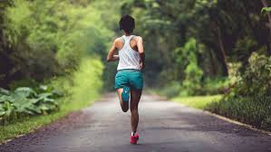
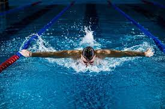
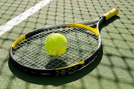
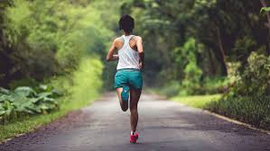
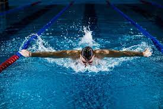
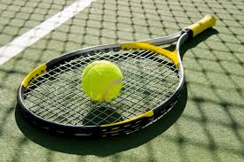

Heipähei!
Kaikki alkoi siitä syksyisestä lauantai-illasta, kun istuin sohvalla tylsistyneenä. Kesäisin tykkäsin heitellä frisbeetä pihalla ja pelata ystävien kanssa beacvolleytä. Kuitenkin syksyn koittaessa, aika alkoi käymään pitkäksi neljän seinän sisällä.
Siitä sain idean kehitellä itselleni harrastuksia, joita pystyn harrastamaan ympäri vuoden.
Ajattelin myös tehdä saman palveluksen kaikille ihmisille, joilla on samantyylistä onglemaa
kehitellä ympärivuotista aktiviteettia itselleen!
Tästä ajatuksesta syntyi #uusiaharrastuksia!
Tervetuloa siis urheilemaan, mahdollisesti uusien lajien pariin!